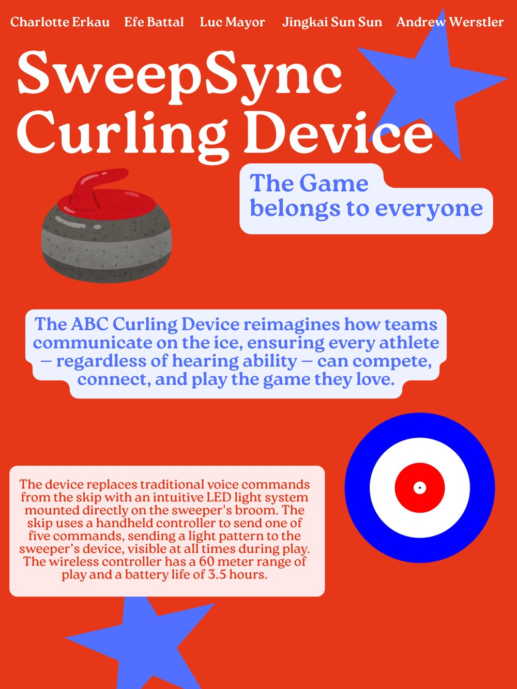
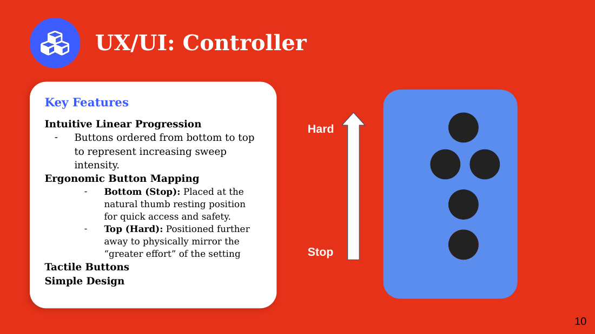
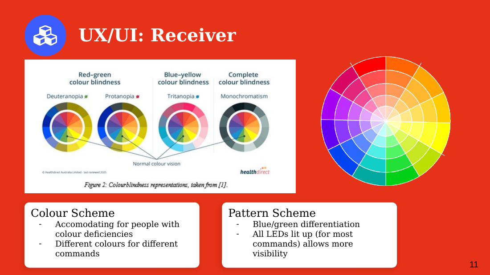

case study · UX & accessibility
SweepSync: making curling calls visible
In curling, the skip shouts commands down the ice and the sweepers react. Players who are deaf or hard of hearing can miss those calls. SweepSync is a broom-mounted device that turns each command into a light pattern, so everyone on the team is part of the conversation. My focus was the concept design, the UX/UI and accessibility.
- my focus
- Concept, UX/UI & accessibility
- also
- 3D modelling, testing, the deck & presenting
- course
- Digital Systems Design 1
- team
- 5 students
five commands, five patterns
{{cur.label}}
{{cur.text}}
design decisions
-
01
Buttons ordered by effort
The controller's buttons run from Stop at the bottom to Hard at the top. Stop sits where the thumb naturally rests, for quick and safe access, while Hard is furthest away to mirror the greater effort it asks for. Tactile buttons let the skip press without looking.
-
02
Colour that works for everyone
I chose the colour scheme by checking it against red-green, blue-yellow and complete colour blindness. Each command has its own colour, and Left and Right are also told apart by which half of the bar lights up, so no call depends on colour alone.
-
03
Readable on the ice
Most commands light every LED so they can be seen mid-sweep, and the LEDs stand out against white ice. A removable diffuser in the enclosure lets the brightness be tuned without reprinting the case.

the poster
I designed the project poster within the course's word count and layout requirements. I wanted the colours to be noticeable, so I chose a bold red background with periwinkle stars that would stand out to someone passing by. I then based the design of our final presentation on the poster, carrying its colours, shapes and style through every slide.
With so few words allowed, the headline and two short text blocks had to carry the whole idea: what the device does, and who it is for.
from the presentation


next steps
Run focus groups with curlers to test how well the patterns and colours read in play, and add feedback on the controller so the skip knows a command was received.